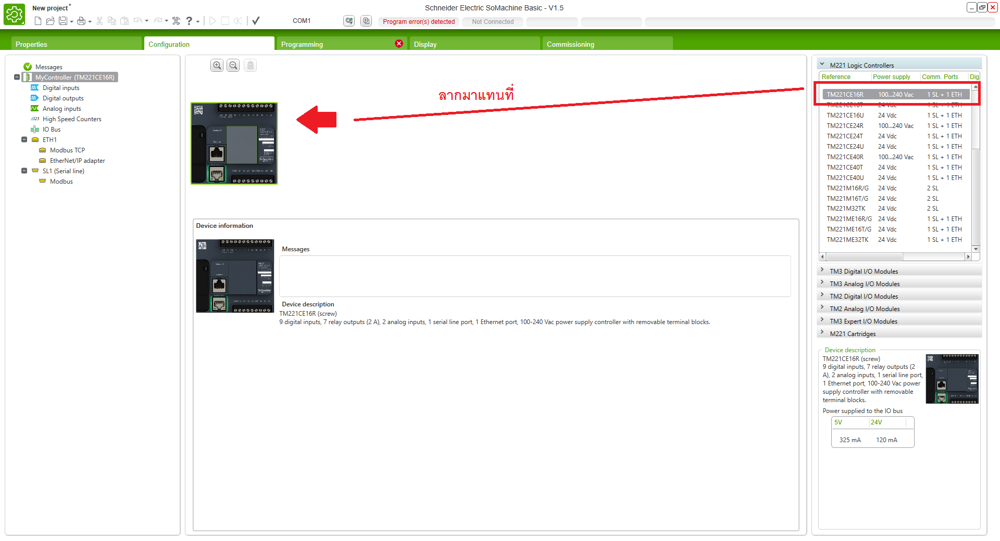
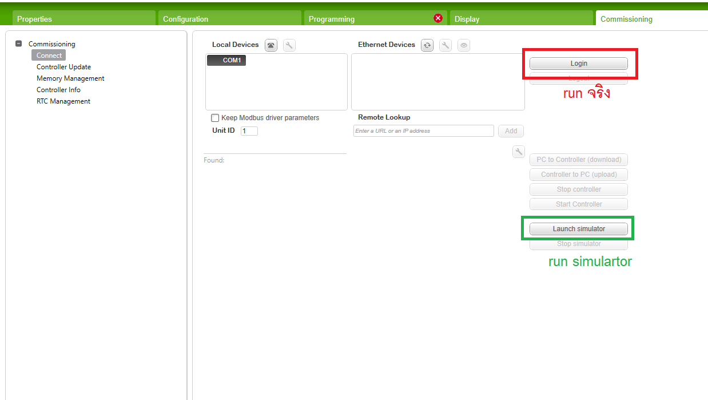

ข้อตกลงผู้อ่าน
***ข้อมูลจากบล็อกนี้จัดทำเมื่อวันที่ 28/09/2567***
PLC TM221CE16 Schneider Electric

PLC รุ่น TM221CE16 จาก Schneider Electric เป็นตัวควบคุมแบบโปรแกรมได้ (Programmable Logic Controller หรือ PLC) ในซีรีส์ Modicon M221 ที่ถูกออกแบบมาเพื่อรองรับงานควบคุมในงานอุตสาหกรรมขนาดเล็กถึงขนาดกลาง โดยมีฟีเจอร์ที่เน้นความยืดหยุ่นในการใช้งาน ความง่ายในการโปรแกรม และประสิทธิภาพสูง
คุณสมบัติและรายละเอียดหลักของ TM221CE16:
- Input/Output (I/O):
- TM221CE16 มี 16 ช่องสัญญาณ โดยแบ่งเป็น:
- 8 อินพุตแบบดิจิตอล (Digital Inputs): รองรับสัญญาณจากอุปกรณ์ภายนอก เช่น เซ็นเซอร์ หรือสวิตช์ เพื่อให้ PLC รับรู้สถานะของการทำงาน
- 8 เอาต์พุตแบบดิจิตอล (Digital Outputs): ใช้ควบคุมอุปกรณ์ต่างๆ เช่น มอเตอร์ วาล์ว หรือรีเลย์ เพื่อสั่งการตามโปรแกรมที่ตั้งไว้
- การเชื่อมต่อเครือข่าย (Networking):
- Ethernet Interface: TM221CE16 มาพร้อมพอร์ต Ethernet ในตัว ทำให้สามารถเชื่อมต่อเข้ากับระบบเครือข่ายได้โดยตรง
- รองรับโปรโตคอล Modbus TCP/IP สำหรับการสื่อสารระหว่าง PLC กับอุปกรณ์อื่นๆ ในเครือข่าย
- ประสิทธิภาพและการประมวลผล:
- TM221CE16 มาพร้อมกับหน่วยประมวลผลที่รวดเร็ว รองรับการควบคุมและการประมวลผลแบบเรียลไทม์ (Real-time control)
- มีความสามารถในการจัดการงานที่มีความซับซ้อนในงานอุตสาหกรรมต่างๆ เช่น ระบบขนส่ง ระบบเครื่องจักรอัตโนมัติ หรือระบบควบคุมในโรงงาน
- การเขียนโปรแกรม (Programming):
- รองรับการเขียนโปรแกรมด้วยซอฟต์แวร์ SoMachine ซึ่งรองรับการเขียนโปรแกรมในรูปแบบ Ladder Diagram (LD), Function Block Diagram (FBD), Structured Text (ST), และ Sequential Function Chart (SFC)
- สามารถดาวน์โหลดโปรแกรมเข้ากับ PLC ผ่านพอร์ต USB หรือ Ethernet ได้
- การขยายตัว (Expansion):
- รองรับการขยายจำนวน I/O โดยเชื่อมต่อกับโมดูลขยายเพิ่มเติมของ Schneider Electric
- สามารถรองรับการเชื่อมต่อกับอุปกรณ์เสริมต่างๆ เช่น โมดูล Analog หรือโมดูลสื่อสาร
- ฟังก์ชันพิเศษ (Advanced Functions):
- Data Logging: บันทึกข้อมูลที่เกิดขึ้นจากการควบคุม เพื่อตรวจสอบและวิเคราะห์การทำงาน
- Web Server Built-in: มีเว็บเซิร์ฟเวอร์ในตัวสำหรับเข้าถึง PLC ผ่านเว็บเบราว์เซอร์โดยไม่ต้องใช้ซอฟต์แวร์พิเศษ
- HMI Integration: รองรับการเชื่อมต่อกับหน้าจอ HMI สำหรับแสดงผลและควบคุม
- ขนาดและการติดตั้ง (Compact Design):
- TM221CE16 มีขนาดกะทัดรัด ติดตั้งง่ายบนราง DIN Rail
- มีความทนทานสูงต่อสภาวะแวดล้อม เช่น ความร้อน ฝุ่น และการสั่นสะเทือน เหมาะสำหรับใช้งานในโรงงานอุตสาหกรรม
- พลังงานและการใช้งาน:
- ใช้พลังงานต่ำ ทำงานต่อเนื่องได้ยาวนานอย่างมีประสิทธิภาพ
- รองรับการทำงานภายใต้สภาวะไฟฟ้าผิดพลาด เช่น ไฟฟ้าขัดข้อง ทำให้ระบบมีความเสถียร
การติดตั้งโปรแกรม SoMachine
- ดาวน์โหลด SoMachine Basic 1.5 จาก: Download → SoMachine Basic 1.5
- เรียกโปรแกรม SoMachine Basic 1.5
- ตรวจสอบการเชื่อมต่อระหว่าง PC กับ PLC โดยใช้สาย USB Cable
- Create a new project
- ในหน้า Project จะมี 5 หน้าหลัก:
- Properties: รายละเอียดผู้พัฒนา
- Project: Configuration และการกำหนดเกี่ยวกับ PLC
- Programming: การเขียนโปรแกรม
- Display: การจำลองการทำงาน
- Commissioning: การอัพโหลดโปรแกรมไปยัง PLC
- ในหน้า Configuration ให้ลาก TM221CE16R มาใส่ 
- ไปที่หน้า Programming เพื่อเขียนโปรแกรม:
- ลาก Contact(F4) เข้ามาใส่ แล้วตั้ง Address เป็น %I0.0
- ลาก Coil(Crlt+F9) เข้ามาใส่ แล้วตั้ง Address เป็น %Q0.0

- ไปที่หน้า Commission กด Login กับ IP ที่ต้องการอัพข้อมูล
- เมื่ออัพโหลดจาก PC ไปยัง PLC เสร็จแล้ว กด Start Controller เพื่อเริ่มการทำงาน 


Start Basic TM221CE16:
- สวิตช์หนึ่งตัวควบคุมหลอดไฟ LED หนึ่งดวง กดติด ปล่อยดับ
- สวิตช์สองตัว โดยสวิตช์หนึ่งตัวควบคุมหลอดไฟ LED สี่ดวง กดติด ปล่อยดับ
- สวิตช์สองตัว โดยสวิตช์หนึ่งตัวควบคุมหลอดไฟ LED สี่ดวง กดติด กดดับ
- ตั้งเวลา (Timer)


การใช้งานทั่วไปของ TM221CE16:
- ระบบควบคุมเครื่องจักรขนาดเล็กถึงขนาดกลาง
- ระบบอัตโนมัติในโรงงานและสายการผลิต
- ระบบควบคุมการทำงานของเครื่องกลต่างๆ
- ระบบควบคุมอุปกรณ์ในกระบวนการผลิต
- ระบบควบคุมระบบไฟฟ้าและระบบปรับอากาศในอาคาร
การโปรแกรมใช้งาน PLC แบบ Single Controller
Schneider — Modicon M221 Logic Controller: Modicon M221 เป็นคอนโทรลเลอร์รุ่นใหม่ล่าสุดจาก Schneider Electric ที่มีประสิทธิภาพการทำงานรวดเร็วและการควบคุมอัตโนมัติที่ง่ายต่อการติดตั้งและใช้งาน